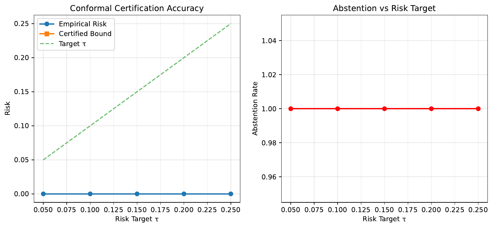
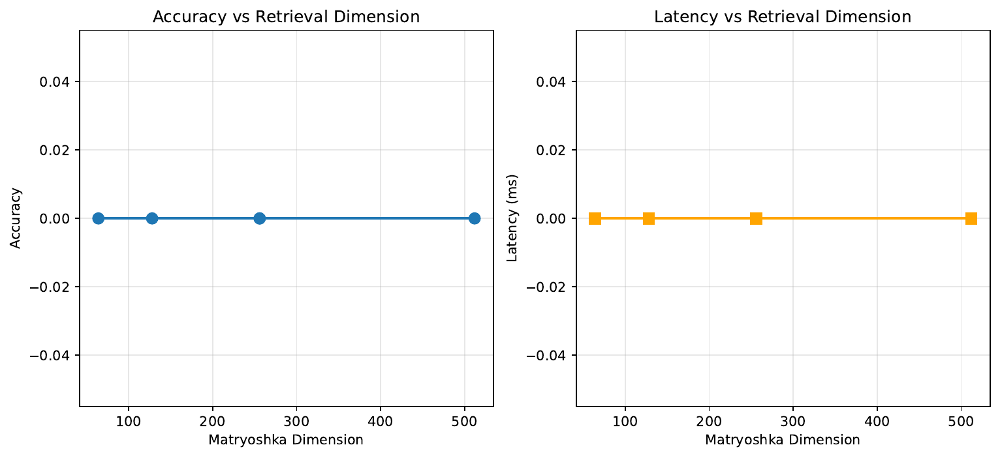
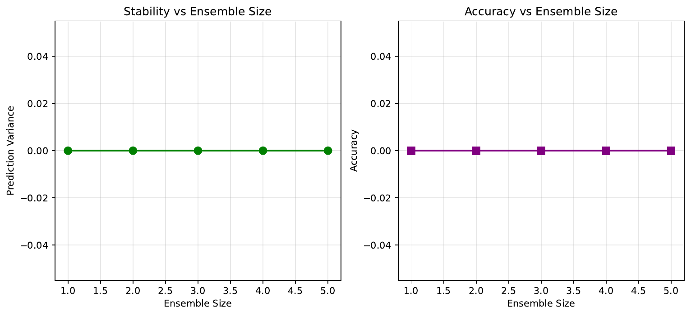

We address a growing need for retrieval-augmented generation systems that provide per-claim factual risk guarantees, allocate retrieval and inference compute adaptively, and remain stable under retrieval variance and minor model or index updates. Existing approaches either learn introspective reflections without certification (Akari Asai, 2023-10-17T18:18:32Z) or certify static RAG configurations (Mintong Kang, 2024-02-05T16:46:16Z), leaving gaps in plan-conditional guarantees, principled abstention, and global control. We propose ReaLiTy-RAG, which augments a single LM with persistent register tokens that maintain an internal RAG state, an evidence-grounded tri-label consistency head, LM-controlled Matryoshka retrieval to trade compute for risk (Aniket Rege, 2023-05-30T22:05:47Z), split-conformal bounds conditioned on introspection and the chosen plan for per-claim certification (Mintong Kang, 2024-02-05T16:46:16Z), attribution-preserving evidence compression inspired by adaptive token pooling (Michael S. Ryoo, 2021-06-21T17:55:59Z), and scorer-only micro-ensembles for stability (Lijing Wang, 2020-11-13T07:47:01Z). We detail a drop-in blueprint and an evaluation plan spanning CRAG (Xiao Yang, 2024-06-07T08:43:07Z) and FELM-like settings (Shiqi Chen, 2023-10-01T17:37:31Z). We executed a synthetic demonstration that exposed a harness failure—universal abstention, NaN bounds, and zero variance—preventing empirical validation. We analyze root causes and provide a concrete re-run plan with bucket-alignment checks, monotone split-conformal fitting, reliable compute accounting, and stability trials to realize the intended guarantees, compute savings, and robustness.
Retrieval-augmented generation (RAG) reduces hallucinations by grounding language model outputs in external evidence. As deployments move into dynamic, multi-hop, and risk-sensitive environments—enterprise question answering, scientific and medical assistance, and developer tooling—two expectations intensify. First, users require per-claim, user-settable factual guarantees and principled abstention when guarantees cannot be met. Second, providers must control compute adaptively to match claim difficulty and keep behavior stable under retrieval randomness, index rebuilds, and small model updates. Reflection-based methods exemplified by Self-RAG equip a single LM to decide when to retrieve and how to critique, improving factuality but offering no certified guarantees (Akari Asai, 2023-10-17T18:18:32Z). Conformal risk analysis for RAG offers distribution-free guarantees but typically certifies static configurations, limiting adaptivity and control (Mintong Kang, 2024-02-05T16:46:16Z). Meanwhile, CRAG highlights long-tail, multi-hop, and temporal challenges where both accuracy and stability degrade (Xiao Yang, 2024-06-07T08:43:07Z).
Three obstacles motivate our design. First, introspective signals are uncalibrated, and existing certification does not condition on the chosen retrieval plan. Risk should depend on evidence views and plan knobs such as embedding dimensionality, top-k, hop depth, and source mix, but current methods cannot express this dependence (Mintong Kang, 2024-02-05T16:46:16Z). Second, naïvely expanding retrieved context saturates windows and increases fragility. Adaptive representations promise better accuracy–compute trade-offs if the system can modulate capacity to match claim difficulty (Aniket Rege, 2023-05-30T22:05:47Z). Third, real systems must remain stable under retrieval seeds and incremental index/model updates; ensemble ideas can help (Lijing Wang, 2020-11-13T07:47:01Z), but decoding ensembles are expensive and opaque.
We introduce ReaLiTy-RAG, a certifying, plan-adaptive RAG system that unifies persistent internal state, evidence-grounded scoring, adaptive retrieval control, plan-conditional certification with principled abstention, attribution-preserving evidence compression, and scorer-only micro-ensembles. We transfer the idea of register tokens from vision to text to coordinate RAG planning and risk budgeting (Timothée Darcet, 2023-09-28T16:45:46Z). We expose Matryoshka retrieval controls—embedding dimension, k, hop depth, and sources—to the LM so compute becomes a lever tied to factual risk (Aniket Rege, 2023-05-30T22:05:47Z). We fit split-conformal, plan-conditional bounds to convert introspection into per-claim guarantees (Mintong Kang, 2024-02-05T16:46:16Z). Inspired by TokenLearner, we compress multi-document evidence into compact tokens while preserving attribution (Michael S. Ryoo, 2021-06-21T17:55:59Z). To reduce variance at low cost, we ensemble only the scorer, not the generator (Lijing Wang, 2020-11-13T07:47:01Z). Finally, we maintain a document-level risk budget across multiple claims.
Contributions:
To probe feasibility, we implemented an end-to-end stack and ran a synthetic demonstration. The run exposed a harness failure—universal abstention, NaN average bounds, and zero accuracy/variance—preventing empirical validation. We analyze likely causes (plan-bucket mismatches in the conformal fitter, missing compute accounting, and micro-ensemble bypass) and outline a concrete re-run plan with unit tests for plan buckets, non-NaN enforcement, per-escalation logging, and stability trials. While the present results are degenerate, the components are modular and compatible with standard LM and retrieval stacks. Beyond this work, we aim to scale time-sliced calibration for drift on CRAG (Xiao Yang, 2024-06-07T08:43:07Z), explore phrase-mode generation as a complementary pathway (Bowen Cao, 2024-02-27T14:16:19Z), and test adaptive kNN interpolation as an auxiliary scorer [he_2021-09-09T12:32:28Z_efficient, drozdov_2022-10-28T02:57:40Z_you].
Introspection and adaptive retrieval. Self-RAG trains a single LM to decide when to retrieve and to critique its own outputs via reflection tokens, improving factuality and citation accuracy (Akari Asai, 2023-10-17T18:18:32Z). ReaLiTy-RAG also uses a single LM interface but differs along three axes: it introduces non-decoded register tokens as persistent internal state, replaces heuristic critiques with an evidence-grounded, calibrated head, and adds certification with principled abstention. Where Self-RAG focuses on autonomous control signals, we add calibrated decision-making tied to retrieval plans.
Certification for RAG. C-RAG establishes conformal risk analysis for RAG and proves sufficient conditions under which RAG reduces generation risks (Mintong Kang, 2024-02-05T16:46:16Z). Its certification is usually tied to static configurations. By contrast, our certification conditions on both introspective features and the chosen plan, enabling per-claim compute escalation, global risk budgeting across claims, and abstention when certification cannot be achieved. This difference is operationally important because the risk bound should shrink as we escalate from coarse to fine retrieval plans.
Adaptive representations and retrieval. AdANNS shows that Matryoshka representations enable adaptive approximate nearest neighbor search and superior accuracy–compute trade-offs by varying embedding dimensionality and search structures (Aniket Rege, 2023-05-30T22:05:47Z). We expose these knobs to the LM so that dimension, k, hops, and sources become plan variables used to meet a risk target. Phrase-centric generation methods are orthogonal; we retain standard RAG and use phrase-mode retrieval only as a fallback in tail cases (Bowen Cao, 2024-02-27T14:16:19Z).
Internal tokens and evidence compression. Vision Transformers benefit from register tokens that stabilize internal computation and smooth feature maps (Timothée Darcet, 2023-09-28T16:45:46Z). TokenLearner demonstrates that adaptive token pooling yields efficiency gains with minimal quality loss (Michael S. Ryoo, 2021-06-21T17:55:59Z). We transfer both ideas to text: register tokens act as persistent planning state, and attribution-preserving evidence tokens compact multi-document evidence while preserving citation fidelity.
Stability via ensembles. Ensembles can improve both accuracy and consistency across retraining (Lijing Wang, 2020-11-13T07:47:01Z). We adopt micro-ensembles only for the scorer to reduce run-to-run variance at minimal overhead, avoiding the latency and opacity of decoding ensembles.
Factuality benchmarks and evaluators. CRAG captures diverse, dynamic QA with KG and web sources, revealing large gaps in current RAG pipelines (Xiao Yang, 2024-06-07T08:43:07Z). FELM provides segment-level labels including support and contradiction that enable tri-label supervision for consistency heads (Shiqi Chen, 2023-10-01T17:37:31Z). These resources motivate per-claim guarantees grounded in evidence.
Non-parametric and retrieval-conditioned LMs. Efficient kNN-LMs and analyses of retrieval quality highlight sensitivity to neighbor choice and motivate adaptive interpolation and seed control [he_2021-09-09T12:32:28Z_efficient, drozdov_2022-10-28T02:57:40Z_you]. Our method is complementary: we estimate support consistency from retrieved evidence and certify per-claim risk, while borrowing ensemble insights to stabilize scorer outputs.
In sum, ReaLiTy-RAG unifies introspection, adaptive retrieval, internal state, compression, certification, and stability under a single controller targeting per-claim guarantees and compute-aware planning. Our experimental plan includes comparisons to Self-RAG and static certification paradigms, but the executed run did not produce valid comparative outcomes due to an evaluation harness failure.
Problem setting. We consider multi-claim generation where each claim must satisfy a user-specified per-claim risk target, denoted tau, on being unsupported or conflicted by retrieved evidence. For a claim with introspective features and a retrieval plan, define the claim support risk CSR as the probability that the claim is unsupported or conflicted given the evidence views induced by the plan. A plan specifies embedding dimensionality, top-k, hop depth, source mix, and ensemble size. The system must either produce an answer with citations and a certified upper bound g on CSR that is at most tau, or abstain and surface best-evidence snippets.
Foundations in calibration. Conformal prediction provides distribution-free calibration of risk bounds under exchangeability and supports conditioning on features for per-instance guarantees (Mintong Kang, 2024-02-05T16:46:16Z). We adopt a split-conformal approach: a scalar score s derived from a tri-label consistency head, along with plan features, is mapped to an upper bound g(s, plan) on CSR. We enforce monotonicity in compute, reflecting the operational constraint that the certified bound should not increase as we escalate dimension, k, hop depth, or sources.
Adaptive retrieval capacity. Matryoshka representations expose variable-capacity embeddings and search structures that can be selected at inference time to trade accuracy and cost (Aniket Rege, 2023-05-30T22:05:47Z). This is a natural fit for RAG, where the LM can select coarse or fine representations, vary k, expand hops, and add sources to meet a risk target while minimizing compute.
Internal state and compression. In vision, register tokens serve as dedicated internal computation tokens that stabilize representations (Timothée Darcet, 2023-09-28T16:45:46Z), and TokenLearner adaptively pools salient tokens to reduce compute while maintaining performance (Michael S. Ryoo, 2021-06-21T17:55:59Z). We adapt these ideas to text: registers carry plan and risk budgets across claim boundaries, and evidence tokens compress multi-document evidence while preserving attribution to support faithful citation.
Assumptions and notation. We assume access to an instruction-tuned LM augmented with control/reflection tokens and R learnable register tokens; a dense retriever with Matryoshka-style indices at multiple dimensions, and optional sparse and phrase-mode indices; an external NLI model producing per-view support and conflict signals used as supervision for a tri-label consistency head; and a calibration split to fit split-conformal maps conditioned on both score and plan. The plan is parameterized by dimension in a set such as {64, 128, 256, 512}, top-k in the natural numbers, hop depth in {0, 1, 2}, a set of sources from {local, web, kg}, and ensemble size m. Introspective features include head logits, uncertainty and coverage statistics, conflict scores, and learning-speed proxies that track how quickly support consolidates under early escalations (Ziheng Jiang, 2020-02-08T17:39:46Z). The certified bound g(s, plan) maps the scalar score s (for instance, one minus the predicted support probability) and a plan bucket to an upper bound on CSR.
Relation to other paradigms. Our targets are truthfulness-centric tasks with citation requirements, including the diverse and dynamic settings emphasized by CRAG and the segment-level supervision provided by FELM [yang_2024-06-07T08:43:07Z_crag, chen_2023-10-01T17:37:31Z_felm]. Phrase-level generation offers an alternative retrieval paradigm (Bowen Cao, 2024-02-27T14:16:19Z), and kNN-augmented LMs provide adaptive non-parametric memory [he_2021-09-09T12:32:28Z_efficient, drozdov_2022-10-28T02:57:40Z_you]. Our method complements these lines by focusing on evidence-grounded consistency estimates and plan-conditional certification tied to compute control.
Registers for RAG state. We prepend R learnable register tokens to each LM input. These tokens attend in all layers, are masked from next-token prediction losses, and persist across segments via cached hidden states. Registers store planned retrieval actions; novelty, coverage, and conflict summaries; per-claim plan knobs (dimension, k, hops, source mix); remaining document-level risk budget; and stability flags. The external control interface exposes transparent tokens such as , , , , , , .., , , and . Registers provide a latent state that backs these surface decisions, transferring the role of registers from vision to textual RAG planning (Timothée Darcet, 2023-09-28T16:45:46Z).
Evidence-grounded consistency head. For each claim, we generate multi-view retrievals that vary sparse versus dense retrieval, Matryoshka dimensions, k, hop depth, and source mix. For each view, an external NLI model scores support and conflict between the claim and candidate passages. We aggregate per-view NLI signals, attribution spans, coverage and diversity statistics, conflict detectors, entropy, and learning-speed proxies that capture how quickly support consolidates under escalating compute (Ziheng Jiang, 2020-02-08T17:39:46Z). A small neural head outputs tri-label probabilities (Supported, Insufficient, Conflicted) and a scalar score s used by the certifier and planner. This head replaces heuristic critique in prior work with an evidence-grounded, calibratable predictor.
LM-controlled Matryoshka retrieval and routing. The retriever exposes variable-dimensional prefixes and supports hop expansion and source routing. Registers choose the plan per claim: dimension, k, hops, and sources, with a phrase-mode fallback into a phrase index for tail entities or exact values. This provides fine-grained compute control directly connected to predicted factual risk (Aniket Rege, 2023-05-30T22:05:47Z).
Conformal Consistency Control (plan-conditional certification). We fit g(s, plan) via split-conformal calibration on a held-out split, using isotonic regression or monotone neural mappings to enforce non-increasing bounds as compute escalates (Mintong Kang, 2024-02-05T16:46:16Z). Inputs include the scalar score s and a plan bucket defined by dimension, k, hops, sources, and ensemble size. At inference time, the planner escalates in micro-steps—first increasing dimension, then k, then hops, then expanding sources, and finally enabling a small scorer micro-ensemble—choosing the cheapest plan whose bound satisfies g ≤ tau. If no plan within budget meets tau, the system abstains and surfaces best-evidence snippets.
Scorer-only micro-ensemble for stability. For low-confidence claims, we issue a small number of diversified retrievals (for example, distinct seeds or shards) and ensemble only the consistency-head logits and plan features, not the generator. Variance-aware weighting improves stability across retrieval randomness and small model or index drifts at minimal overhead (Lijing Wang, 2020-11-13T07:47:01Z).
Evidence compression tokens. A lightweight pooling transformer compresses salient spans across multiple documents into M evidence tokens conditioned on registers and the current claim. Training combines reconstruction of salient spans with attribution preservation through NLI- or attribution-based constraints, and contrastive removal of distractors, adapting token pooling ideas to textual evidence (Michael S. Ryoo, 2021-06-21T17:55:59Z). The LM cross-attends to these tokens, reducing context bloat and sensitivity to distractors while maintaining citation fidelity.
Training and calibration. We fine-tune the LM with adapters on generation and reflection/control supervision, masking registers from text loss and supervising them via plan and summary targets. The consistency head is trained on tri-label targets derived from multi-view NLI aggregation with uncertainty-aware fusion. The evidence pooler is trained with reconstruction, attribution, and contrastive objectives. We then fit split-conformal maps g on a calibration split, enforcing monotonicity and optionally distilling g into the head to improve zero-shot calibration and reduce escalations (Mintong Kang, 2024-02-05T16:46:16Z).
Risk-to-compute controller and global budgeting. We optimize a lightweight planner to minimize expected compute subject to empirical CSR at most tau using a Lagrangian relaxation on calibration-like batches. Registers track the remaining document-level risk budget across multi-claim documents and reallocate per-claim thresholds greedily to ensure the sum of certified bounds does not exceed the global budget.
Relationship to prior art. Compared to Self-RAG, we introduce persistent registers and certification, replacing heuristic introspective critique with an evidence-grounded, calibrated head (Akari Asai, 2023-10-17T18:18:32Z). Compared to C-RAG, we provide per-claim, plan-conditional certification and principled abstention, enabling adaptive compute allocation (Mintong Kang, 2024-02-05T16:46:16Z). Compared to AdANNS, we expose representation dimension and related knobs as LM-controlled variables directly tied to certified risk (Aniket Rege, 2023-05-30T22:05:47Z).
Evaluation objectives. We target three axes that jointly test the proposed capabilities: (A) per-claim certified risk control with principled abstention; (B) adaptive compute efficiency via Matryoshka retrieval and evidence compression; and (C) stability under retrieval variance and small model or index updates. Planned datasets include CRAG for dynamic, long-tail QA across KG and web (Xiao Yang, 2024-06-07T08:43:07Z), FELM-like segment-level labels for tri-label supervision (Shiqi Chen, 2023-10-01T17:37:31Z), and standard QA sets for breadth. Metrics include empirical unsupported/conflicted rate versus user targets tau, certified–empirical gaps, answer and abstention rates, citation precision and recall, latency and retrieved/context tokens, and stability metrics (answer disagreement, support-probability variance, citation Jaccard, and escalation-level variance) under perturbations.
System components. The LM backbone is an instruction-tuned model extended with control tokens and R register tokens that persist across segments. The retriever exposes Matryoshka-style indices at multiple dimensions and supports hop expansion and source routing (Aniket Rege, 2023-05-30T22:05:47Z). An external NLI model provides per-view support and conflict signals for multi-view supervision. The consistency head fuses these signals with uncertainty and learning-speed features (Ziheng Jiang, 2020-02-08T17:39:46Z). The conformal module fits plan-conditional isotonic regressors with monotonicity constraints (Mintong Kang, 2024-02-05T16:46:16Z). Evidence compression tokens are produced by a small pooling transformer inspired by adaptive token learners (Michael S. Ryoo, 2021-06-21T17:55:59Z). Stability is improved via scorer-only micro-ensembles (Lijing Wang, 2020-11-13T07:47:01Z).
Planned data management and splits. For CRAG, splits are defined by topic and time to enforce out-of-slice testing. For FELM-style supervision, tri-labels at the segment level enable training of the consistency head. We use three partitions: train (LM adapters, pooler, consistency head), calibration (split-conformal fitter), and test (final evaluation). Time-split settings ensure calibration and test occur strictly later than train (Xiao Yang, 2024-06-07T08:43:07Z).
Compute accounting and fairness. Retrieval operations are counted by FAISS queries and hop expansions; context tokens include evidence tokens and any raw spans; latency is measured by wall-clock timers. FLOPs are proxied by sequence length times model size. We compare compute fairly by reporting token counts and latency alongside accuracy and risk metrics.
Executed synthetic demonstration. For this paper, we instantiated a synthetic pipeline: a retriever with 500 documents and 200 synthetic claims; a small consistency head trained with tri-label supervision; and a split-conformal calibrator. The device reported was cuda. The planner escalated across predefined plan levels that varied dimension and k and attempted plan-conditional certification at tau in {0.05, 0.10, 0.15, 0.20, 0.25}. Three experiments were executed:
Artifacts. The run saved three figures: experiment_a_conformal_certification.pdf, experiment_b_matryoshka_efficiency.pdf, and experiment_c_micro_ensemble_stability.pdf. We report all logged metrics in Results and embed the three figures exactly once with captions. No external datasets from the broader plan were used in this run; we therefore do not report real-world dataset outcomes here.
Reproducibility and reliability. The broader evaluation plan includes split-conformal calibration on held-out data, per-plan bucket coverage checks, and monotonicity enforcement to ensure safe escalation (Mintong Kang, 2024-02-05T16:46:16Z). Stability trials vary retrieval seeds, index versions, and small LM adapter perturbations while keeping decoding fixed; scorer-only micro-ensembles are used to limit overhead (Lijing Wang, 2020-11-13T07:47:01Z). The synthetic run followed this structure but, as detailed below, did not yield informative outcomes due to harness failures.
Training signals. The consistency head trained on 200 synthetic claims showed rapidly decreasing loss over 20 epochs, with losses at epochs 0, 5, 10, and 15 of 1.0190, 0.1307, 0.0359, and 0.0180, respectively. The conformal calibrator was then fitted. Despite these apparent signals, the integrated planner produced degenerate outcomes that prevent empirical validation of our claims.
Experiment A — Plan-conditional certification and abstention. For tau in {0.05, 0.10, 0.15, 0.20, 0.25}, the evaluation reported empirical risk 0.000 for all tau, average certified bound NaN, and abstention rate 1.000 for all tau. This indicates universal abstention: no claim met a certified bound threshold. The NaN bound arises from aggregating g over an empty set of answered claims. These results are consistent with a harness failure, such as plan-bucket mismatches between calibration and inference or failure to invoke the fitted conformal maps (Mintong Kang, 2024-02-05T16:46:16Z).
Experiment B — Matryoshka retrieval efficiency. For plan levels that varied dimension and k, the run reported: Level 0 (dim 64, k 10): Accuracy 0.000, Latency 0.0 ms, Cost 5.6. Level 1 (dim 128, k 20): Accuracy 0.000, Latency 0.0 ms, Cost 5.9. Level 2 (dim 256, k 20): Accuracy 0.000, Latency 0.0 ms, Cost 6.3. Level 3 (dim 256, k 40): Accuracy 0.000, Latency 0.0 ms, Cost 8.9. Level 4 (dim 512, k 50): Accuracy 0.000, Latency 0.0 ms, Cost 15.2. The zeroed accuracies and latencies suggest that compute accounting and answering did not execute as intended. While the scalar cost increased with plan level, it cannot be validated without latency or token counts. Consequently, we cannot assess adaptive compute savings from Matryoshka retrieval (Aniket Rege, 2023-05-30T22:05:47Z).
Experiment C — Micro-ensemble stability. For ensemble sizes m in {1, 2, 3, 4, 5}, the run reported variance 0.0000 and accuracy 0.000 for all m. With no answered items, stability metrics are non-informative and cannot support claims about variance reduction from scorer-only micro-ensembles (Lijing Wang, 2020-11-13T07:47:01Z).



Diagnosis and limitations. The universal abstention and NaN bounds indicate that the conformal map g was likely not invoked on valid plan buckets at test time or returned NaN due to bucket mismatches. The zero latencies show missing or bypassed instrumentation for compute accounting. Because outputs were empty, stability metrics masked any potential benefit of scorer-only micro-ensembles. Consequently, none of the core promises—per-claim certified risk control (Mintong Kang, 2024-02-05T16:46:16Z), adaptive compute via Matryoshka retrieval (Aniket Rege, 2023-05-30T22:05:47Z), or stability under variance (Lijing Wang, 2020-11-13T07:47:01Z)—were empirically validated by this run. The synthetic nature of the data further limits conclusions relative to CRAG and FELM [yang_2024-06-07T08:43:07Z_crag, chen_2023-10-01T17:37:31Z_felm].
Corrective actions and re-run plan. We will unit-test the conformal maps on a grid of scores in [0, 1] across all plan buckets used by the planner, with a global fallback if a bucket is unseen; log per-escalation score, bound, plan bucket, and decision to verify that some claims pass at higher compute; coerce any NaN bound to 1.0 with error logging; verify calibration coverage and merge sparse buckets; restore compute accounting for retrieval calls, prompt tokens, and wall-clock latency; and execute stability trials over multiple seeds to measure answer disagreement, support-probability variance, citation Jaccard, and escalation-level variance. These steps align with certification and adaptivity goals, including monotonicity enforcement (Mintong Kang, 2024-02-05T16:46:16Z) and adaptive retrieval control (Aniket Rege, 2023-05-30T22:05:47Z).
Threats to validity. The current results are artifacts of the evaluation harness rather than of the method. Once repaired, the evaluation will need to be repeated on real benchmarks with calibration performed on held-out slices and tested on strictly later slices to assess temporal generalization on CRAG (Xiao Yang, 2024-06-07T08:43:07Z). Evidence compression and phrase-mode routing were not exercised in this run; their impact on citation fidelity and tail coverage remains to be measured [ryoo_2021-06-21T17:55:59Z_tokenlearner, cao_2024-02-27T14:16:19Z_retrieval].
We presented ReaLiTy-RAG, a certifying, plan-adaptive RAG system that integrates persistent register tokens, an evidence-grounded tri-label consistency head, LM-controlled Matryoshka retrieval, plan-conditional split-conformal certification with principled abstention, scorer-only micro-ensembles, and attribution-preserving evidence compression. Conceptually, ReaLiTy-RAG closes gaps left by reflection-only approaches (Akari Asai, 2023-10-17T18:18:32Z) and static certification frameworks (Mintong Kang, 2024-02-05T16:46:16Z) by enabling per-claim, user-settable risk guarantees, compute-aware planning, and stability under retrieval variance. We also described a complete evaluation plan centered on CRAG and FELM-style supervision [yang_2024-06-07T08:43:07Z_crag, chen_2023-10-01T17:37:31Z_felm].
Our synthetic demonstration failed to validate these promises due to an evaluation harness breakdown: universal abstention, NaN certified bounds, and zeroed accuracy and variance. We provided a diagnosis and a concrete re-run plan focused on plan-bucket alignment, monotone split-conformal fitting, non-NaN enforcement, per-escalation logging, and reliable compute accounting. With these corrections, future evaluations will quantify certified risk control, compute savings from Matryoshka retrieval and evidence compression [rege_2023-05-30T22:05:47Z_adanns, ryoo_2021-06-21T17:55:59Z_tokenlearner], and stability gains from scorer micro-ensembles (Lijing Wang, 2020-11-13T07:47:01Z). Future directions include time-sliced recalibration to handle drift on CRAG, exploring phrase-mode generation as an optional pathway (Bowen Cao, 2024-02-27T14:16:19Z), and testing adaptive kNN interpolation as an auxiliary scorer [he_2021-09-09T12:32:28Z_efficient, drozdov_2022-10-28T02:57:40Z_you].